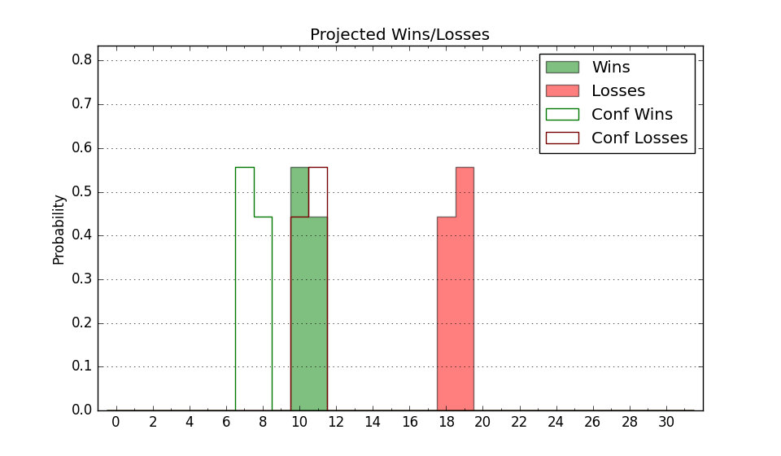

| Home | Game Probabilities | Conferences | Preseason Predictions | Odds Charts | NCAA Tournament |
| City: | Kansas City, Missouri | |
| Conference: | Summit (6th)
| |
| Record: | 7-10 (Conf) 10-18 (Overall) | |
| Ratings: | Comp.: -10.5 (288th) Net: -10.5 (288th) Off: 93.7 (331st) Def: 104.1 (203rd) SoR: 0.0 (154th) |
| Remaining | ||||||
|---|---|---|---|---|---|---|
| Date | Opponent | Win Prob | Pred. | |||
| 2/25 | @ South Dakota (320) | 44.1% | L 65-66 | |||
| Previous | Game Score | |||||
| Date | Opponent | Win Prob | Result | Off | Def | Net |
| 11/9 | @LSU (153) | 14.2% | L 63-74 | -5.1 | 3.9 | -1.2 |
| 11/11 | @Illinois (21) | 2.6% | L 48-86 | -17.2 | 1.4 | -15.7 |
| 11/17 | @Kansas St. (22) | 2.6% | L 53-69 | 0.5 | 14.8 | 15.3 |
| 11/21 | (N) Toledo (109) | 16.2% | W 83-71 | 32.1 | 12.3 | 44.4 |
| 11/22 | (N) Indiana St. (88) | 12.4% | W 63-61 | 7.7 | 19.0 | 26.7 |
| 11/23 | (N) Florida Gulf Coast (178) | 26.8% | L 59-73 | -3.7 | -14.6 | -18.3 |
| 11/26 | SIU Edwardsville (225) | 52.8% | L 54-64 | -23.9 | 5.9 | -18.0 |
| 11/29 | Idaho St. (224) | 52.5% | L 65-75 | -1.1 | -24.8 | -25.9 |
| 12/3 | Lindenwood (333) | 76.0% | W 61-47 | -9.1 | 21.0 | 11.9 |
| 12/6 | @Oklahoma (64) | 5.0% | L 53-75 | -0.6 | -2.8 | -3.4 |
| 12/10 | @Green Bay (361) | 74.3% | L 64-70 | -10.9 | -18.5 | -29.4 |
| 12/19 | South Dakota (320) | 72.9% | W 62-45 | 1.5 | 19.7 | 21.1 |
| 12/29 | @Denver (284) | 34.1% | L 83-85 | -2.4 | 3.3 | 0.9 |
| 12/31 | @Nebraska Omaha (304) | 40.2% | W 75-59 | 24.3 | 6.4 | 30.7 |
| 1/7 | @Oral Roberts (54) | 4.4% | L 71-74 | 23.9 | 3.6 | 27.5 |
| 1/12 | St. Thomas MN (208) | 48.0% | W 81-60 | 22.7 | 13.8 | 36.5 |
| 1/14 | Western Illinois (251) | 57.6% | L 52-60 | -19.6 | 3.3 | -16.2 |
| 1/19 | @North Dakota (280) | 33.7% | L 60-77 | -11.0 | -7.0 | -18.0 |
| 1/21 | @North Dakota St. (200) | 19.6% | W 75-73 | 21.5 | -7.2 | 14.3 |
| 1/26 | Nebraska Omaha (304) | 69.6% | W 64-61 | -2.4 | -1.6 | -3.9 |
| 1/28 | Denver (284) | 63.8% | W 70-60 | 4.1 | 6.4 | 10.6 |
| 1/30 | South Dakota St. (158) | 37.0% | L 66-67 | 6.0 | -11.7 | -5.7 |
| 2/4 | Oral Roberts (54) | 13.6% | L 57-85 | -8.9 | -7.2 | -16.2 |
| 2/9 | @Western Illinois (251) | 28.5% | W 76-64 | 34.7 | -0.8 | 33.9 |
| 2/11 | @St. Thomas MN (208) | 21.3% | L 43-73 | -25.3 | -14.3 | -39.5 |
| 2/16 | North Dakota St. (200) | 45.3% | L 58-69 | -14.3 | -1.2 | -15.5 |
| 2/18 | North Dakota (280) | 63.4% | L 73-81 | -1.8 | -15.5 | -17.3 |
| 2/23 | @South Dakota St. (158) | 14.7% | L 50-73 | -9.4 | -10.5 | -19.9 |
| Stats & Trends | |||||
|---|---|---|---|---|---|
| Current | Day | Week | Month | Season | |
| Composite | -10.5 | -0.7 | -1.4 | -3.5 | +2.4 |
| Comp Rank | 288 | -8 | -20 | -45 | +30 |
| Net Efficiency | -10.5 | -0.7 | -1.4 | -3.9 | -- |
| Net Rank | 288 | -8 | -19 | -48 | -- |
| Off Efficiency | 93.7 | -0.2 | -0.2 | -0.6 | -- |
| Off Rank | 331 | -6 | -4 | -20 | -- |
| Def Efficiency | 104.1 | -0.4 | -1.2 | -3.3 | -- |
| Def Rank | 203 | -13 | -21 | -44 | -- |
| SoS Rank | 220 | +17 | +1 | -30 | -- |
| Exp. Wins | 10.4 | -0.2 | -0.9 | -0.9 | -0.2 |
| Exp. Conf Wins | 7.4 | -0.2 | -0.9 | -0.9 | -0.1 |
| Conf Champ Prob | 0.0 | -- | -- | -0.0 | -1.8 |

| Advanced Stats | ||
|---|---|---|
| Stat | Value | Rank |
| Off Eff FG % | 0.428 | 359 |
| Off Ast Ratio | 0.105 | 363 |
| Off ORB% | 0.347 | 20 |
| Off TO Rate | 0.176 | 311 |
| Off FT Ratio | 0.377 | 42 |
| Def Eff FG % | 0.487 | 110 |
| Def Ast Ratio | 0.126 | 62 |
| Def ORB% | 0.313 | 309 |
| Def TO Rate | 0.150 | 214 |
| Def FT Ratio | 0.384 | 319 |